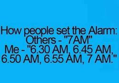
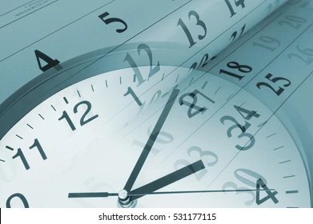

logo
Avator

logo
Avator
Are you a Morning Person?
8 Tips that will help you become a Morning Person
We have heard of the famous quote that "The early bird gets the worm". Many studies have indeed proved this correct; it has been found that morning people tend to be active, which ultimately leads to their success.
But if you're a night owl and want to become a morning person, you may have already tried many things and relapsed into waking up late. And maybe that is why you're here.
According to scientists, our genes determine our 'chronotype',which describes if we are a morning person or a night person. We can influence our chronotypes to a certain degree; all it takes consistency, determination, and two weeks. So, let's begin!
Decide your morning schedule and adjust your sleep. We usually focus on setting our sleeping times so that we wake up early the next day. But we don't need to worry about that as it just causes stress. Our bodies are designed to adjust and settle down the same with time. You'll be tired by waking up early and would gradually start sleeping on time.
However, you must stick to you becoming a morning person routine-wake up, exercise, and get on with your work. And dont't take this as a "schedule" that you have to follow, because then, you would start finding a way of "taking a break".
Use a smart alarm
Another step to becoming a morning person is using the snooze button very less. The snooze button was developed so that people could get a 5-10-minute window before waking up. But it can hinder you from waking up early and fresh.
You can try the alternatives of snooze, like Smart Alarm or Math Alarm. These Smartphone apps ask you to solve a puzzle or a math problem before snoozing your alarm, which tricks your brain to wake up and function. You can also try setting different songs for your alarm tone, which act as novel stimuli and help the brain to wake up.
Let in the light
This works for people who wish to wake up when the sun hasn’t risen like at 5 am. You can turn on your room lights, which will send signals o the body to terminate melatonin secretion, which helps in sleeping. Ultimately, making your brain think that the sun has risen already, and it’s time to wake up.
You might think it is not the most feasible way as your electricity bill would rise. But this is a short-term solution to wake you up early. If you follow this for a few days and become a morning person, you might not need to do it anymore!
Get some exercise

Exercising has so many benefits, and when done during the morning hours, it also helps in staying active reducing stress, and lowering the blood pressure. Becoming a morning person leads to sleeping on time.
Have a protien-heavy meal

Proteins have known benefits for the body, one being increasing dopamine levels. Switch your meal to more protein-rich food like yogurt or eggs and you’ll be ready for the day.
Avoid the urge to nap

Avoid gadgets in the bedroom
Get organized and set up your calendar
SCHEDULING DRONES © 2021 ALL Rights Reserved